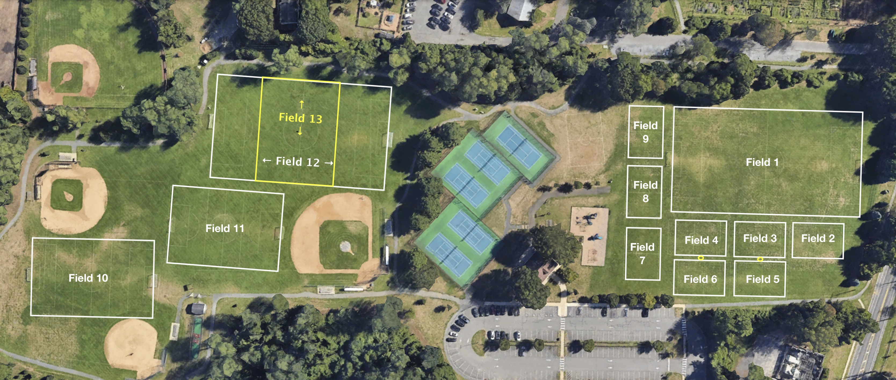

Our Field Locations
All K-2 and 3-8 home league games and weekly practice drills are hosted at Fair Haven Fields. Please check your schedule closely to confirm your team's designated pitch allocation.
Fair Haven Fields
Address: Dartmouth Rd, Fair Haven, NJ 07704
Our primary facility featuring multiple field configurations tailored for youth matches and older division match play. Ample parking is available via the Dartmouth Rd. entrance.
For K-2 Divisions: The Kindergarten through 2nd Grade program splits play across 8 small fields (Field 2 through Field 9), each clearly marked with visible signage. Field assigments change weekly; verify your Field location assignment via TeamSnap before your Saturday slot.
For 3-8 Divisions: Field 1 supports 11v11 play. Field 12 supports 9v9 play. Field 10 supports 7v7 and 9v9, though is a bit short for 9v9. Fields 11 and 13 support 7v7 only. Games cannot be on Fields 12 and 13 at the same time.
